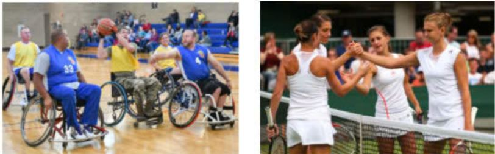
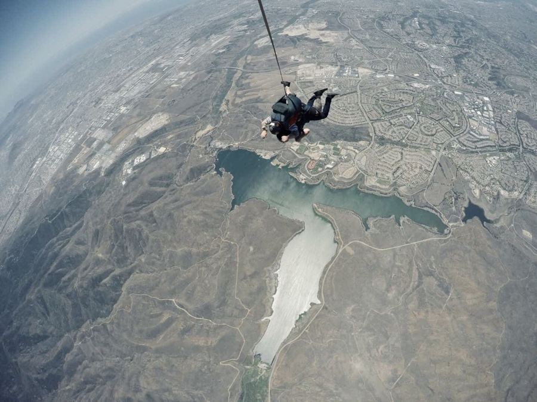

Speaking Test 4
Part 1: In this part, I am going to ask you three short questions about yourself and your interests. You will have 30 seconds to reply to each question.
Yesterday I watched a film on TV. It was a cartoon, called “Tom and Jerry”. It was very funny. I liked the mouse. He was cute and smart. I watched it with my little sister and we laughed a lot together. It reminded me of my childhood. I think cartoons like this are a great way to relax.
My favourite film star was Tom Cruise. He is 40. He is from America. He is very handsome. He is friendly and kind. He always helps other people. I have watched many of his action movies and I really admire his acting skills. He always looks very energetic in his films. I hope to watch his new movie soon.
Halong Bay is a famous place in Vietnam. It’s in Quang Ninh. It’s very beautiful and famous. The weather is nice. The people are friendly and kind. The food is delicious and healthy. Here we can swim in the sea, climb the mountain. I really like Halong Bay. I went there last summer with my family and stayed for two days. We took a boat trip around the bay and it was unforgettable. I would love to visit again in the future.
Part 2: In this part, I'm going to ask you to describe a picture. Then I will ask you two questions about it. You will have 45 seconds for each response.
|
|
|---|---|
Last week I went to a football match with my friend. It was in Hanoi. The match was important so the stadium was very crowded. It was hard to find a seat because there were so many people around us. I felt excited but also a little tired afterward. It was still a memorable experience with my friend.
Many people don’t like a crowded place because it is noisy and hard to move. They can’t talk or breathe. It’s not good for their health. For example, I once got lost in a crowded market and felt very stressed. I try to avoid crowded places if I can. I prefer quiet places instead.
Part 3: In this part, I'm going to ask you to compare two pictures, and I will then ask you two questions about them. You will have 45 seconds for each response.

The two pictures show people playing sports in different places
In the first picture I can see some men on their wheelchairs. They are disabled. They are playing basketball. They look focused. I think they are trying hard to win.
In the second picture, I can see some girls. They are holding their rackets so I think they are playing tennis. They are shaking hands. Maybe they have finished their game. Both groups of people look very active and seem to enjoy their sports. I think playing sports is a great way to stay healthy. It also helps people make new friends.
Part 4: In this part, I'm going to show you a picture and ask you three questions. You will have one minute to think about your answers before you start speaking. You will have two minutes to answer all three questions.

Tell me a time you watched or played an extreme sports
How did you feel when you played extreme sports
Only adults are allowed to play extreme sports. What do you think about it?
I was so nervous because I had never done this before. But after that I felt so happy and proud of myself
|
|---|